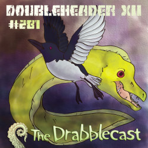

Thursday, May the 2nd, 2013
back to: title, date or indexes
Those of you who have heard the inimitable Norm Sherman read my work will be happy to learn that the latest episode of the Drabblecast is a “double-header” featuring two tales from Hooting Yard. The show includes Pabstus Tack and The Breadcrumbs Man. It is worth pointing out that, when it came to recording a muffled ghostly contribution at the end of a telephone line, I was under the impression that Norm would be reading The Return Of Pabstus Tack, so that is the story I was talking about. Apparently that piece will now appear in a future edition.
Hie thee yon to go and listen, after which you may wish to add your observations to the Drabblecast Forum.
